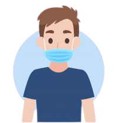
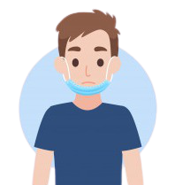
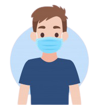
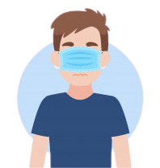

Dentre todas as alternativas abaixo, qual delas se encontra como meio de prevenir o covid?
Qual é a alternativa que mostra como deve-se usar a máscara corretamente?




O que fazer se começar a sentir os sintomas do Covid?
Quais são os sintomas que alertam o possível contagio da doença?
Qual é o modo incorreto de prevenção à covid 19?
O grupo de risco da doença é composto por?
Em quanto tempo uma pessoa infectada de forma leve está curada da doença?
Qual é a porcentagem que o álcool em gel deve ter para que ocorra a descontaminação do vírus?
Quais são os animais que transmitem o vírus?
Qual é o período de incubação do coronavírus?